Deep submesoscales in 1/100°?#
Are there submesoscale features in the deep eq ocean? Do we resolve them with coarser vertical spacing?
May be some fronty things close to the equator, but our vertical resolution gets coarse (≈40m at 500m depth), so we may not be resolving things properly
Setup#
%config InlineBackend.figure_format = "retina"
%matplotlib inline
%load_ext autoreload
%autoreload 2
import dask
import distributed
import matplotlib as mpl
import matplotlib.pyplot as plt
import numpy as np
import seawater as sw
import cf_xarray
import dcpy
import facetgrid
import xarray as xr
# import xmitgcm
# import pump
mpl.rcParams["savefig.dpi"] = 300
mpl.rcParams["savefig.bbox"] = "tight"
mpl.rcParams["figure.dpi"] = 140
xr.set_options(keep_attrs=True)
<xarray.core.options.set_options at 0x7f43eb4a8550>
cluster = distributed.LocalCluster(
n_workers=24,
processes=True,
threads_per_worker=1,
local_directory="/home/dcherian/.dask_worker/",
dashboard_address=":9999",
memory_limit="10GB",
)
cluster
client = distributed.Client(cluster)
Read data#
dirname = "/home/dcherian/pump/TPOS_MITgcm_HR/"
ds = xr.open_mfdataset(
f"{dirname}/cmpr_*.nc",
parallel=True,
data_vars="minimal",
coords="minimal",
compat="override",
chunks={"longitude": 1500, "latitude": 240},
)
Ro#
f = dcpy.oceans.coriolis(ds.latitude)
vor = ds.v.differentiate("longitude") / 110e3 - ds.u.differentiate("latitude") / 105e3
Ro = vor / f
Ro.attrs["long_name"] = "$Ro = ζ/f$"
Ro
<xarray.DataArray (time: 141, depth: 185, latitude: 2400, longitude: 7500)>
dask.array<truediv, shape=(141, 185, 2400, 7500), dtype=float32, chunksize=(1, 185, 240, 1500), chunktype=numpy.ndarray>
Coordinates:
* latitude (latitude) float32 -12.0 -11.99 -11.98 ... 11.98 11.99 12.0
* longitude (longitude) float32 -170.0 -170.0 -170.0 ... -95.02 -95.01 -95.0
* depth (depth) float32 -1.25 -3.75 -6.25 ... -5.658e+03 -5.758e+03
* time (time) datetime64[ns] 1995-11-07T08:00:00 ... 1995-11-30T16:00:00
Attributes:
long_name: $Ro = ζ/f$xarray.DataArray
- time: 141
- depth: 185
- latitude: 2400
- longitude: 7500
- dask.array<chunksize=(1, 185, 240, 1500), meta=np.ndarray>
Array Chunk Bytes 1.88 TB 266.40 MB Shape (141, 185, 2400, 7500) (1, 185, 240, 1500) Count 165273 Tasks 7050 Chunks Type float32 numpy.ndarray - latitude(latitude)float32-12.0 -11.99 -11.98 ... 11.99 12.0
array([-12. , -11.989996, -11.979992, ..., 11.979992, 11.989996, 12. ], dtype=float32) - longitude(longitude)float32-170.0 -170.0 ... -95.01 -95.0
array([-170. , -169.99 , -169.98 , ..., -95.020004, -95.01 , -95. ], dtype=float32) - depth(depth)float32-1.25 -3.75 ... -5.758e+03
array([-1.250000e+00, -3.750000e+00, -6.250000e+00, -8.750000e+00, -1.125000e+01, -1.375000e+01, -1.625000e+01, -1.875000e+01, -2.125000e+01, -2.375000e+01, -2.625000e+01, -2.875000e+01, -3.125000e+01, -3.375000e+01, -3.625000e+01, -3.875000e+01, -4.125000e+01, -4.375000e+01, -4.625000e+01, -4.875000e+01, -5.125000e+01, -5.375000e+01, -5.625000e+01, -5.875000e+01, -6.125000e+01, -6.375000e+01, -6.625000e+01, -6.875000e+01, -7.125000e+01, -7.375000e+01, -7.625000e+01, -7.875000e+01, -8.125000e+01, -8.375000e+01, -8.625000e+01, -8.875000e+01, -9.125000e+01, -9.375000e+01, -9.625000e+01, -9.875000e+01, -1.012500e+02, -1.037500e+02, -1.062500e+02, -1.087500e+02, -1.112500e+02, -1.137500e+02, -1.162500e+02, -1.187500e+02, -1.212500e+02, -1.237500e+02, -1.262500e+02, -1.287500e+02, -1.312500e+02, -1.337500e+02, -1.362500e+02, -1.387500e+02, -1.412500e+02, -1.437500e+02, -1.462500e+02, -1.487500e+02, -1.512500e+02, -1.537500e+02, -1.562500e+02, -1.587500e+02, -1.612500e+02, -1.637500e+02, -1.662500e+02, -1.687500e+02, -1.712500e+02, -1.737500e+02, -1.762500e+02, -1.787500e+02, -1.812500e+02, -1.837500e+02, -1.862500e+02, -1.887500e+02, -1.912500e+02, -1.937500e+02, -1.962500e+02, -1.987500e+02, -2.012500e+02, -2.037500e+02, -2.062500e+02, -2.087500e+02, -2.112500e+02, -2.137500e+02, -2.162500e+02, -2.187500e+02, -2.212500e+02, -2.237500e+02, -2.262500e+02, -2.287500e+02, -2.312500e+02, -2.337500e+02, -2.362500e+02, -2.387500e+02, -2.412500e+02, -2.437500e+02, -2.462500e+02, -2.487500e+02, -2.513687e+02, -2.542363e+02, -2.573763e+02, -2.608145e+02, -2.645794e+02, -2.687019e+02, -2.732162e+02, -2.781592e+02, -2.835718e+02, -2.894987e+02, -2.959886e+02, -3.030949e+02, -3.108764e+02, -3.193972e+02, -3.287274e+02, -3.389439e+02, -3.501312e+02, -3.623811e+02, -3.757947e+02, -3.904827e+02, -4.065660e+02, -4.241773e+02, -4.434617e+02, -4.645781e+02, -4.877004e+02, -5.130195e+02, -5.407438e+02, -5.711019e+02, -6.043441e+02, -6.407443e+02, -6.806025e+02, -7.242472e+02, -7.720381e+02, -8.243693e+02, -8.816718e+02, -9.444181e+02, -1.013125e+03, -1.088360e+03, -1.170741e+03, -1.260949e+03, -1.358099e+03, -1.458099e+03, -1.558099e+03, -1.658099e+03, -1.758099e+03, -1.858099e+03, -1.958099e+03, -2.058098e+03, -2.158098e+03, -2.258098e+03, -2.358098e+03, -2.458098e+03, -2.558098e+03, -2.658098e+03, -2.758098e+03, -2.858098e+03, -2.958098e+03, -3.058098e+03, -3.158098e+03, -3.258098e+03, -3.358098e+03, -3.458098e+03, -3.558098e+03, -3.658098e+03, -3.758098e+03, -3.858098e+03, -3.958098e+03, -4.058098e+03, -4.158099e+03, -4.258099e+03, -4.358099e+03, -4.458099e+03, -4.558099e+03, -4.658099e+03, -4.758099e+03, -4.858099e+03, -4.958099e+03, -5.058099e+03, -5.158099e+03, -5.258099e+03, -5.358099e+03, -5.458099e+03, -5.558099e+03, -5.658099e+03, -5.758099e+03], dtype=float32) - time(time)datetime64[ns]1995-11-07T08:00:00 ... 1995-11-...
- long_name :
- Time (hours since 1950-01-01)
- standard_name :
- time
- axis :
- T
- _CoordinateAxisType :
- Time
array(['1995-11-07T08:00:00.000000000', '1995-11-07T12:00:00.000000000', '1995-11-07T16:00:00.000000000', '1995-11-07T20:00:00.000000000', '1995-11-08T00:00:00.000000000', '1995-11-08T04:00:00.000000000', '1995-11-08T08:00:00.000000000', '1995-11-08T12:00:00.000000000', '1995-11-08T16:00:00.000000000', '1995-11-08T20:00:00.000000000', '1995-11-09T00:00:00.000000000', '1995-11-09T04:00:00.000000000', '1995-11-09T08:00:00.000000000', '1995-11-09T12:00:00.000000000', '1995-11-09T16:00:00.000000000', '1995-11-09T20:00:00.000000000', '1995-11-10T00:00:00.000000000', '1995-11-10T04:00:00.000000000', '1995-11-10T08:00:00.000000000', '1995-11-10T12:00:00.000000000', '1995-11-10T16:00:00.000000000', '1995-11-10T20:00:00.000000000', '1995-11-11T00:00:00.000000000', '1995-11-11T04:00:00.000000000', '1995-11-11T08:00:00.000000000', '1995-11-11T12:00:00.000000000', '1995-11-11T16:00:00.000000000', '1995-11-11T20:00:00.000000000', '1995-11-12T00:00:00.000000000', '1995-11-12T04:00:00.000000000', '1995-11-12T08:00:00.000000000', '1995-11-12T12:00:00.000000000', '1995-11-12T16:00:00.000000000', '1995-11-12T20:00:00.000000000', '1995-11-13T00:00:00.000000000', '1995-11-13T04:00:00.000000000', '1995-11-13T08:00:00.000000000', '1995-11-13T12:00:00.000000000', '1995-11-13T16:00:00.000000000', '1995-11-13T20:00:00.000000000', '1995-11-14T00:00:00.000000000', '1995-11-14T04:00:00.000000000', '1995-11-14T08:00:00.000000000', '1995-11-14T12:00:00.000000000', '1995-11-14T16:00:00.000000000', '1995-11-14T20:00:00.000000000', '1995-11-15T00:00:00.000000000', '1995-11-15T04:00:00.000000000', '1995-11-15T08:00:00.000000000', '1995-11-15T12:00:00.000000000', '1995-11-15T16:00:00.000000000', '1995-11-15T20:00:00.000000000', '1995-11-16T00:00:00.000000000', '1995-11-16T04:00:00.000000000', '1995-11-16T08:00:00.000000000', '1995-11-16T12:00:00.000000000', '1995-11-16T16:00:00.000000000', '1995-11-16T20:00:00.000000000', '1995-11-17T00:00:00.000000000', '1995-11-17T04:00:00.000000000', '1995-11-17T08:00:00.000000000', '1995-11-17T12:00:00.000000000', '1995-11-17T16:00:00.000000000', '1995-11-17T20:00:00.000000000', '1995-11-18T00:00:00.000000000', '1995-11-18T04:00:00.000000000', '1995-11-18T08:00:00.000000000', '1995-11-18T12:00:00.000000000', '1995-11-18T16:00:00.000000000', '1995-11-18T20:00:00.000000000', '1995-11-19T00:00:00.000000000', '1995-11-19T04:00:00.000000000', '1995-11-19T08:00:00.000000000', '1995-11-19T12:00:00.000000000', '1995-11-19T16:00:00.000000000', '1995-11-19T20:00:00.000000000', '1995-11-20T00:00:00.000000000', '1995-11-20T04:00:00.000000000', '1995-11-20T08:00:00.000000000', '1995-11-20T12:00:00.000000000', '1995-11-20T16:00:00.000000000', '1995-11-20T20:00:00.000000000', '1995-11-21T00:00:00.000000000', '1995-11-21T04:00:00.000000000', '1995-11-21T08:00:00.000000000', '1995-11-21T12:00:00.000000000', '1995-11-21T16:00:00.000000000', '1995-11-21T20:00:00.000000000', '1995-11-22T00:00:00.000000000', '1995-11-22T04:00:00.000000000', '1995-11-22T08:00:00.000000000', '1995-11-22T12:00:00.000000000', '1995-11-22T16:00:00.000000000', '1995-11-22T20:00:00.000000000', '1995-11-23T00:00:00.000000000', '1995-11-23T04:00:00.000000000', '1995-11-23T08:00:00.000000000', '1995-11-23T12:00:00.000000000', '1995-11-23T16:00:00.000000000', '1995-11-23T20:00:00.000000000', '1995-11-24T00:00:00.000000000', '1995-11-24T04:00:00.000000000', '1995-11-24T08:00:00.000000000', '1995-11-24T12:00:00.000000000', '1995-11-24T16:00:00.000000000', '1995-11-24T20:00:00.000000000', '1995-11-25T00:00:00.000000000', '1995-11-25T04:00:00.000000000', '1995-11-25T08:00:00.000000000', '1995-11-25T12:00:00.000000000', '1995-11-25T16:00:00.000000000', '1995-11-25T20:00:00.000000000', '1995-11-26T00:00:00.000000000', '1995-11-26T04:00:00.000000000', '1995-11-26T08:00:00.000000000', '1995-11-26T12:00:00.000000000', '1995-11-26T16:00:00.000000000', '1995-11-26T20:00:00.000000000', '1995-11-27T00:00:00.000000000', '1995-11-27T04:00:00.000000000', '1995-11-27T08:00:00.000000000', '1995-11-27T12:00:00.000000000', '1995-11-27T16:00:00.000000000', '1995-11-27T20:00:00.000000000', '1995-11-28T00:00:00.000000000', '1995-11-28T04:00:00.000000000', '1995-11-28T08:00:00.000000000', '1995-11-28T12:00:00.000000000', '1995-11-28T16:00:00.000000000', '1995-11-28T20:00:00.000000000', '1995-11-29T00:00:00.000000000', '1995-11-29T04:00:00.000000000', '1995-11-29T08:00:00.000000000', '1995-11-29T12:00:00.000000000', '1995-11-29T16:00:00.000000000', '1995-11-29T20:00:00.000000000', '1995-11-30T00:00:00.000000000', '1995-11-30T04:00:00.000000000', '1995-11-30T08:00:00.000000000', '1995-11-30T12:00:00.000000000', '1995-11-30T16:00:00.000000000'], dtype='datetime64[ns]')
- long_name :
- $Ro = ζ/f$
Scott’s \(Ro\)
\begin{equation} Ro = \frac{|ζ|}{|ζ| + |f|} \end{equation}
sRo = np.abs(vor) / (np.abs(vor) + np.abs(f))
sRo.attrs["long_name"] = "$Ro = |ζ| / (|ζ| + |f|)$"
\(u\) lat-depth sections#
kwargs = dict(
robust=True,
vmin=0,
vmax=0.8,
cmap=mpl.cm.Spectral_r,
cbar_kwargs={"orientation": "horizontal"},
)
ds.u.sel(longitude=[-110, -125, -140, -155], method="nearest").sel(
latitude=slice(-5, 5), depth=slice(-2000)
).isel(time=50).plot(
y="depth",
x="latitude",
row="longitude",
robust=True,
cbar_kwargs={"orientation": "horizontal"},
)
<xarray.plot.facetgrid.FacetGrid at 0x7f4552b2b7f0>
Scott \(Ro\) maps#
Looks more “fronty” at depth
subset = sRo.sel(latitude=slice(-10, 10), longitude=slice(-155, -110))
subset.isel(time=50).sel(depth=0, method="nearest").plot(**kwargs)
<matplotlib.collections.QuadMesh at 0x7f461efdd580>
sRo.isel(time=50).sel(depth=-100, method="nearest").plot(**kwargs)
<matplotlib.collections.QuadMesh at 0x7f47b6c28f70>
subset.isel(time=50).sel(depth=-200, method="nearest").plot(**kwargs)
<matplotlib.collections.QuadMesh at 0x7f4284573d60>
for depth in [-300, -500, -700, -1000]:
plt.figure()
subset.isel(time=50).sel(depth=depth, method="nearest").plot(ylim=(-5, 5), **kwargs)
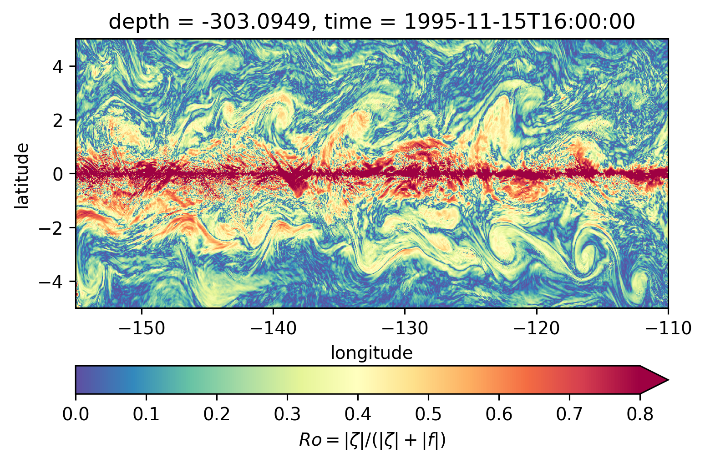
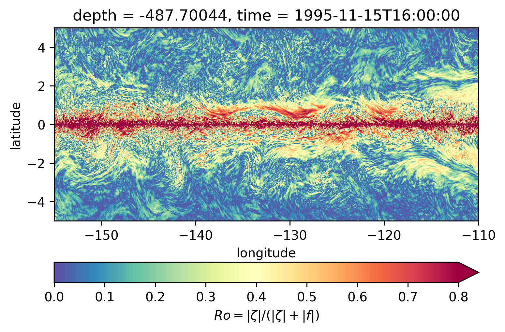
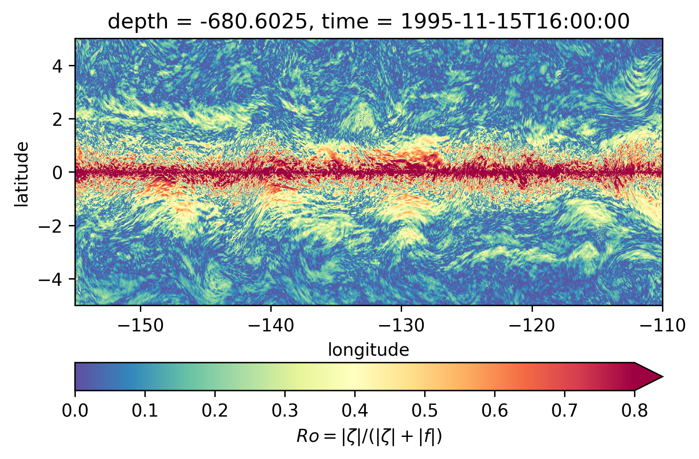
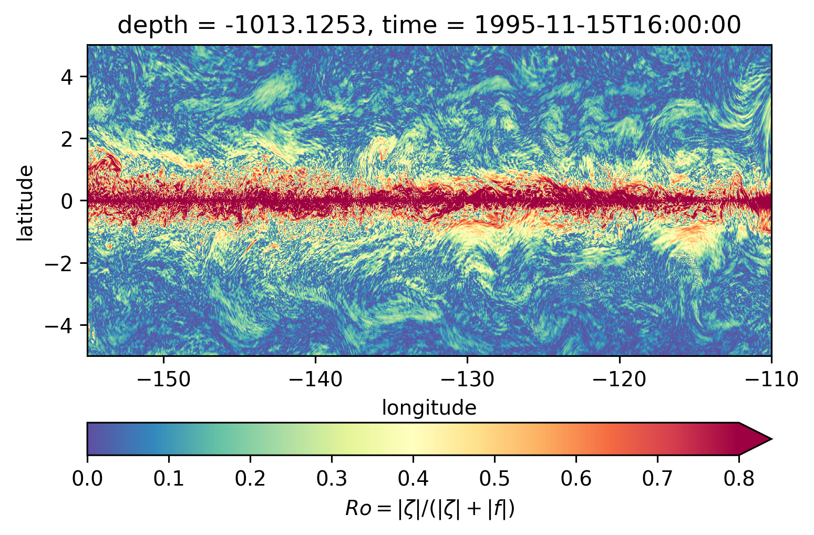
Ro maps at depth#
for depth in [-300, -500, -700, -1000]:
plt.figure()
Ro.reindex_like(subset).isel(time=50).sel(depth=depth, method="nearest").plot(
ylim=(-5, 5),
cmap=mpl.cm.RdBu_r,
vmin=-1,
vmax=1,
)
/home/dcherian/miniconda3/envs/dcpy/lib/python3.8/site-packages/xarray/core/indexing.py:1375: PerformanceWarning: Slicing is producing a large chunk. To accept the large
chunk and silence this warning, set the option
>>> with dask.config.set(**{'array.slicing.split_large_chunks': False}):
... array[indexer]
To avoid creating the large chunks, set the option
>>> with dask.config.set(**{'array.slicing.split_large_chunks': True}):
... array[indexer]
value = value[(slice(None),) * axis + (subkey,)]
/home/dcherian/miniconda3/envs/dcpy/lib/python3.8/site-packages/xarray/core/indexing.py:1375: PerformanceWarning: Slicing is producing a large chunk. To accept the large
chunk and silence this warning, set the option
>>> with dask.config.set(**{'array.slicing.split_large_chunks': False}):
... array[indexer]
To avoid creating the large chunks, set the option
>>> with dask.config.set(**{'array.slicing.split_large_chunks': True}):
... array[indexer]
value = value[(slice(None),) * axis + (subkey,)]
/home/dcherian/miniconda3/envs/dcpy/lib/python3.8/site-packages/xarray/core/indexing.py:1375: PerformanceWarning: Slicing is producing a large chunk. To accept the large
chunk and silence this warning, set the option
>>> with dask.config.set(**{'array.slicing.split_large_chunks': False}):
... array[indexer]
To avoid creating the large chunks, set the option
>>> with dask.config.set(**{'array.slicing.split_large_chunks': True}):
... array[indexer]
value = value[(slice(None),) * axis + (subkey,)]
/home/dcherian/miniconda3/envs/dcpy/lib/python3.8/site-packages/xarray/core/indexing.py:1375: PerformanceWarning: Slicing is producing a large chunk. To accept the large
chunk and silence this warning, set the option
>>> with dask.config.set(**{'array.slicing.split_large_chunks': False}):
... array[indexer]
To avoid creating the large chunks, set the option
>>> with dask.config.set(**{'array.slicing.split_large_chunks': True}):
... array[indexer]
value = value[(slice(None),) * axis + (subkey,)]
Ro Lat-depth plots#
There may be some interesting things in 1°S-1°N, but our vertical resolution is coarse below 250m
for longitude in [-155, -140, -125, -110]:
plt.figure()
Ro.isel(time=50).sel(longitude=longitude, method="nearest").plot(
ylim=(-500, 0), vmin=-1, vmax=1, cmap=mpl.cm.RdBu_r, y="depth"
)
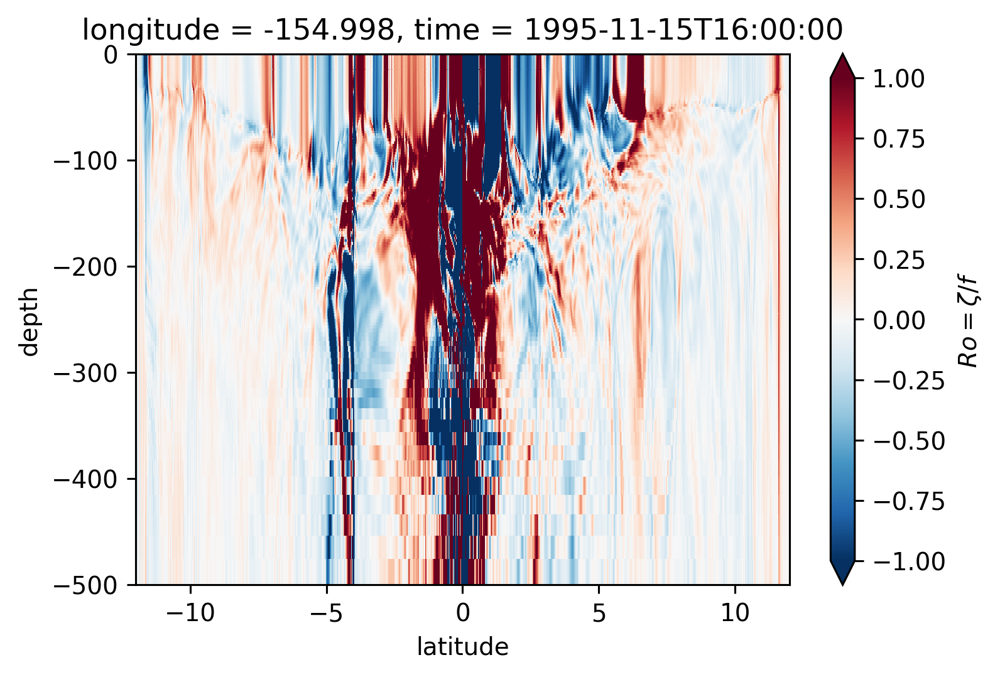
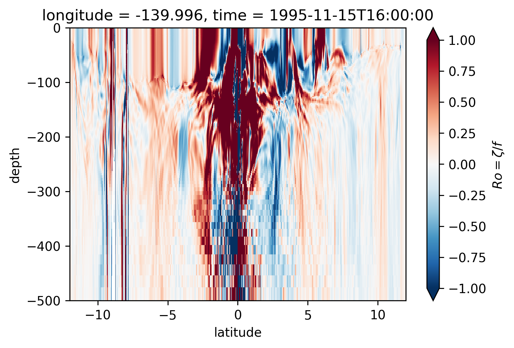
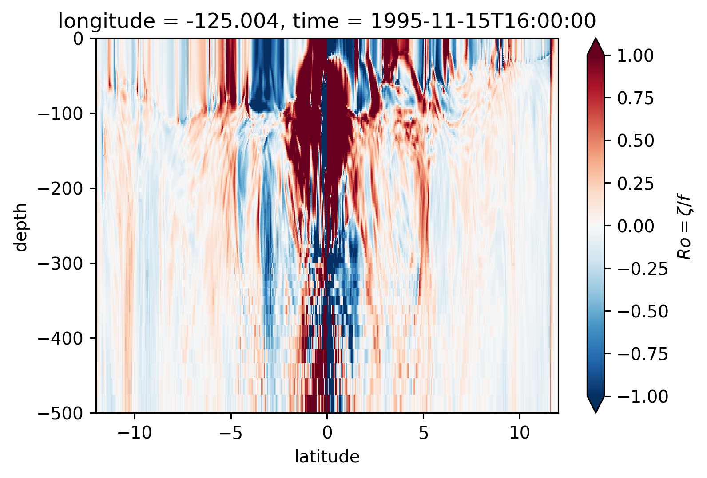
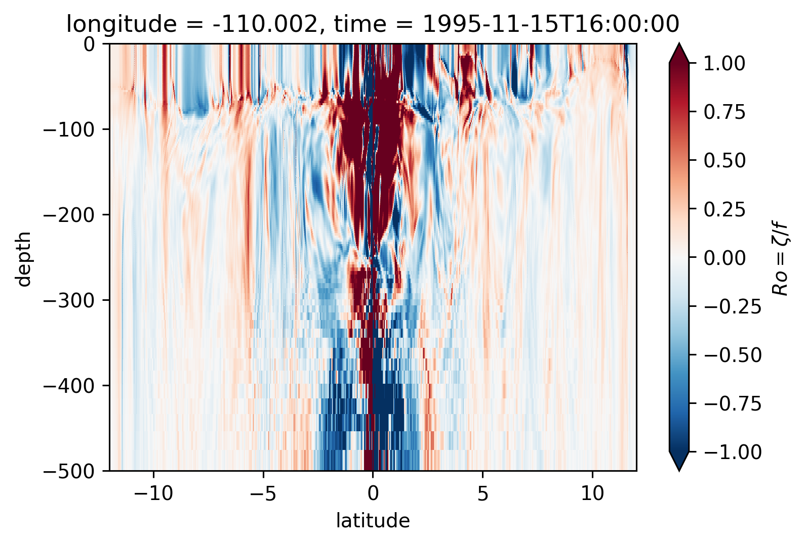
for longitude in [-155, -140, -125, -110]:
plt.figure()
sRo.isel(time=50).sel(longitude=longitude, method="nearest").plot(
ylim=(-500, 0), vmin=0, vmax=0.8, cmap=mpl.cm.RdBu_r, y="depth"
)
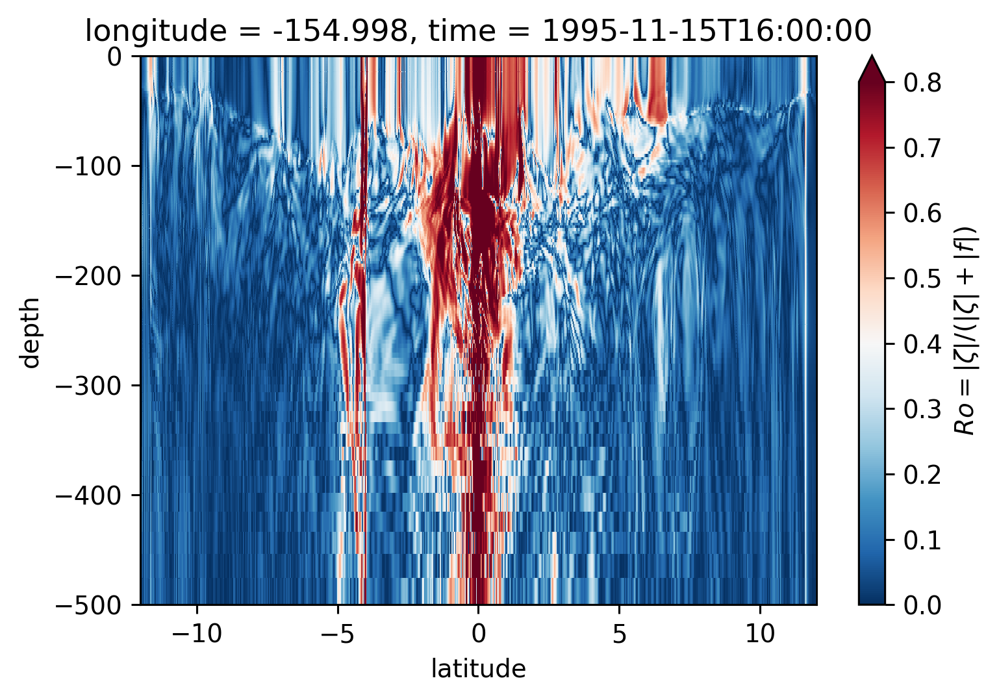
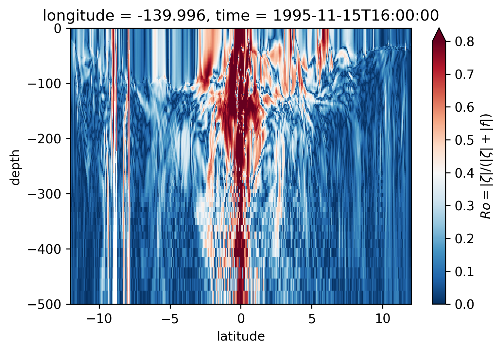
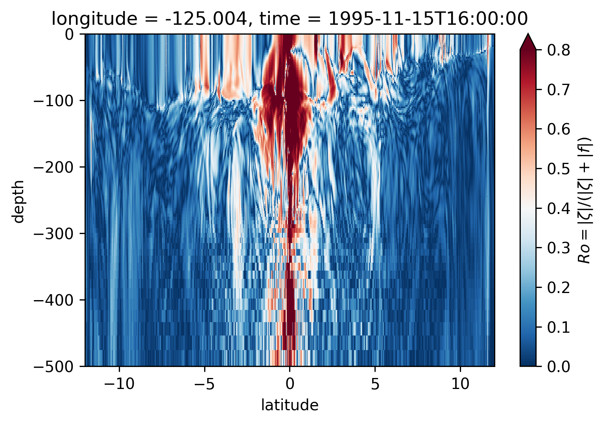
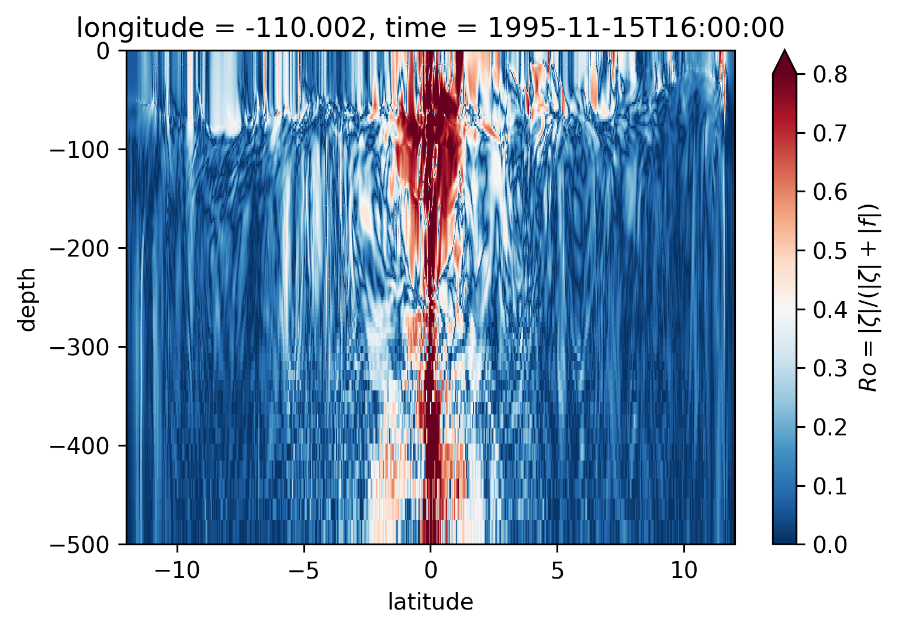